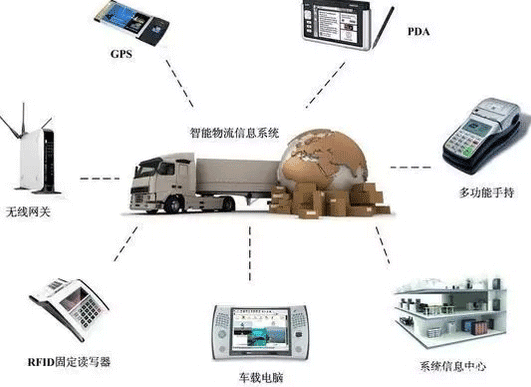
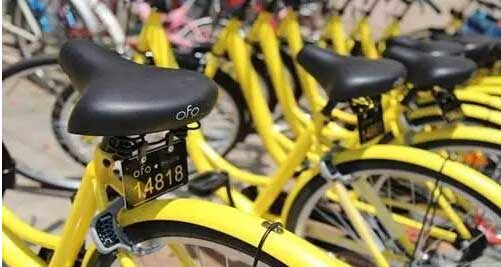
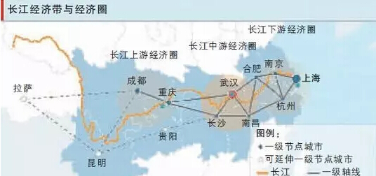

随着路网、水网、航线、邮路及相关配套设施的快速发展并逐步完善，不少业内人士经常会提出一个问题：大规模的交通基础设施建设过后，行业将往哪个方向发展？
对于物流人，这确实是一个值得思考的问题，却又是一个不值得顾虑的问题。为什么？仅从全国两会期间各方面的期待和诉求也能发现，交通运输今后的发展空间依然广阔。只不过，与过去不同的是，新时期对交通运输提出的是升级了的更高层次的需求，对交通人提出的是更专业化、更精细化、更具人文关怀的要求。
今年迅猛发展的共享单车成为两会期间的热门话题。为解决好城市居民“最后一公里”出行问题，过去政府没少想办法——补充接驳公交短板，优化“微循环”公交线网；投入大量财政资金，布局公租自行车及配套设施；配套便于骑行的慢行道路系统。即便如此，也没能阻止非法营运车辆大行其道。

共享单车的迅速走红，某种程度上说明，解决“最后一公里”问题的传统思路和举措有局限性，同时也表明，“最后一公里”还有旺盛的交通发展需求。
不仅城市，农村最后一公里问题也是两会的热点问题。全国人大代表、浙江天能集团董事长张天任建议：国家要重点以电动自行车、电动三轮车、微型电动汽车等运输工具为支撑，构建起一个适合农村道路的物流配送体系。这就需要国家适当放开相关政策，将其列入法定交通工具，并允许在农村道路上行驶。建议国家要出台有针对性的财税扶持政策，对于在建设农村物流服务网点过程中购买的物流专用电动车，直接予以专项资金补贴或享受税收优惠政策。这既可降低物流企业建设农村物流配送体系的成本，又可进一步提高物流企业建设农村配送服务网点的积极性和有效性，真正打通农村电商物流的“最后一公里”。
在城市群发展方面，除了已纳入国家规划蓝图的交通支撑系统，有人大代表提出了新的课题。
如：全国人大代表郭安提出，长江中游城市群现有交通网络都以连通本省内的城市组群为主，彼此间缺乏统一的、系统性的规划和建设；贯穿经济、人口最密集区域的东西方向沿长江铁路能力不足，西北至东南沿海方向缺乏快速通道。他建议，从国家层面推动中部四省会之间交通升级，形成海陆空三位一体的立体交通格局，推动长江中游城市群建设。

张兆安代表也认为“长期以来，长江一直是我国东西交通的大动脉，也是连接我国东中西部的重要纽带，长江经济带在我国国民经济中占有十分重要的地位。”作为与沿海并列为中国最重要的两条经济带之一的长江经济带，如果抓住黄金水道的主线，能够形成航运带动物流、物流拉动产业、产业推动合作的循环链，其战略重要性已日益突出。然而，目前制约并影响长江黄金水道航运功能不能充分发挥作用的瓶颈很多。张兆安表示，充分发挥长江黄金水道航运功能的核心，是要加快航运设施标准化和航运服务标准化建设以及建立长江黄金水道的利益共同体。他建议：强化国家发展战略，细化航运发展规划。
在交通硬件支撑能力大力提升的同时，社会对交通管理和交通服务水平的期待更高。有政协委员提出，运输服务融合过程中，应注意提高服务标准化、精细化水平。比如，出发前要给旅客提供良好的购票、安检、候乘体验；途中要提高信息服务水平，营造温馨出行环境；到达后做好旅客疏散和换乘工作；另外，还要提升国际化服务水平，如完善多种语言标志标牌、提供有效咨询服务等。
去年我国民航在航班数量和密度迅速提高的情况下，航班正常率达到76%以上，比2015年提升了8个百分点，但与旅客对民航准点、高效的期待还有不小差距。部分参加两会的人大代表认为，应该通过优化空域管理等办法，进一步释放民航运输生产力和服务保障能力。
尤其值得注意的是，新技术和新型载运工具可能给未来交通运输转型发展带来机遇和挑战。资本大鳄对无人驾驶车辆和无人机的追捧，使得其在技术方面不断取得重大突破。两会期间，这也成为一些人大代表、政协委员讨论的热点话题之一。有人就提出，应该加快完善相应基础配套设施建设、制度建设、运行管理和相关应用安全评估等工作。
除了重视那些已经列入规划和计划的重大交通项目的落地，这些由代表和委员带来的民间声音，也代表了现实需求。将这些“微需求”汇聚起来，或许对行业发展来讲也是大课题。
令人鼓舞的是，两会还没结束，在3月14日的交通运输部部务会上，李小鹏部长提出了深化交通运输供给侧结构性改革的重点任务：降成本、补短板、强服务，在这个大的原则下，全行业的同仁，应该都知道往哪个方向努力了吧？
